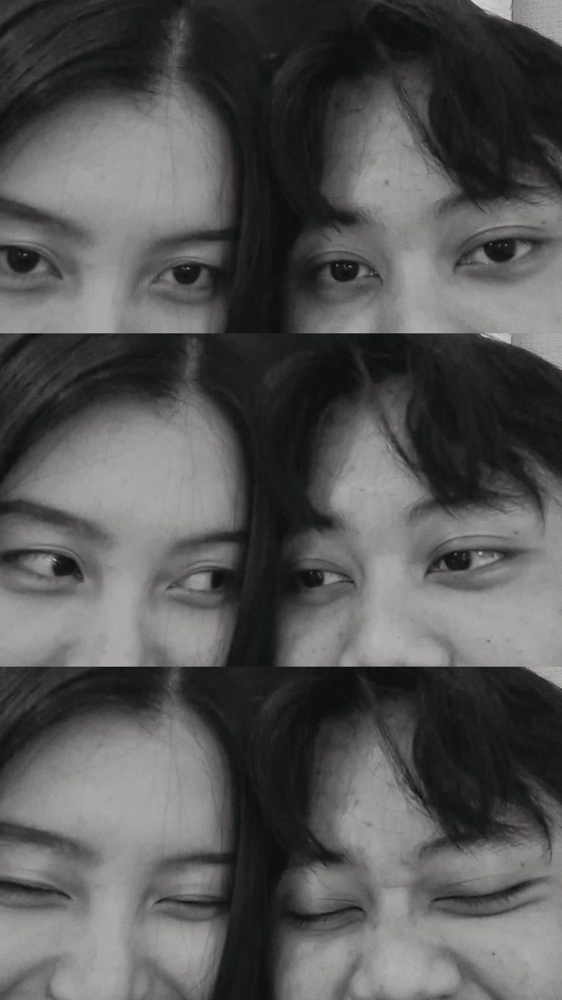

Kisah Kita

Waktu kita pertama ketemu ❤️

Lucu yahh dulu kita, aku masih pakai kalung rante hehe

First time kita nonton

Ini First time kita mam sushi sayang

Pakai bantal leher, kaldo ultah dari ayang timaacih sayang🤍

Kita ke gacoan cipondoh habis kamu pulang kerja
Kita diner di solaria

Healing ke ragunan ketemu temannya ayang

OTW Pulang dari ragunan, sambil menatap masa depan kita yang cerah

Ehhhh sebentar-sebentar kita ngasoh dulu yahh seng

Cisssc

Cekrekkkk

Sederhana tapi tetangga ga suka wkwkwk

Nonton waktu maghrib2 ketemu si Yugo

Cisss seneng banget ketemu pemerannya langsung

Pertama kali ayang main ke rumah

Habis kerumah aku, isi tenaganya mam steak

Hal hal kaya gini yang gabisa di ulang lagi tau seng

Jalan jalan ke TC sama ayang

Mam sushi lagi pulang kerja

Gemeshhhh banget sayang akuuu

Gemashhhhhh kann

Sayang kita foto dulu sebelum nonton

Sayang parkir motornya jauh banget yahh, kita ngasoh dulu yukk

Seng aku bosen di rumah, yukkk kita ke caffe lagi

Main time zone sama ayanggg

Sayang nih liat aku bisa dapetin jackpot nyaa, alhamdulillah sayang kita dapet banyak bangettt

Mam sushi lagiiii

Enak kan seng keliatannyaaa beuhhh

Eittttssss habis itu kita enek mau mam suhsi lagi wkwkwk

First time kita main PS

Aku ngalah biar ayang mau di ajak main lagi sebenernya

Nonton film Kanibal
Selamat ulang tahun calon istriikuuu

Happy 22 sayangg

Aku otw 22 tahun depan seng